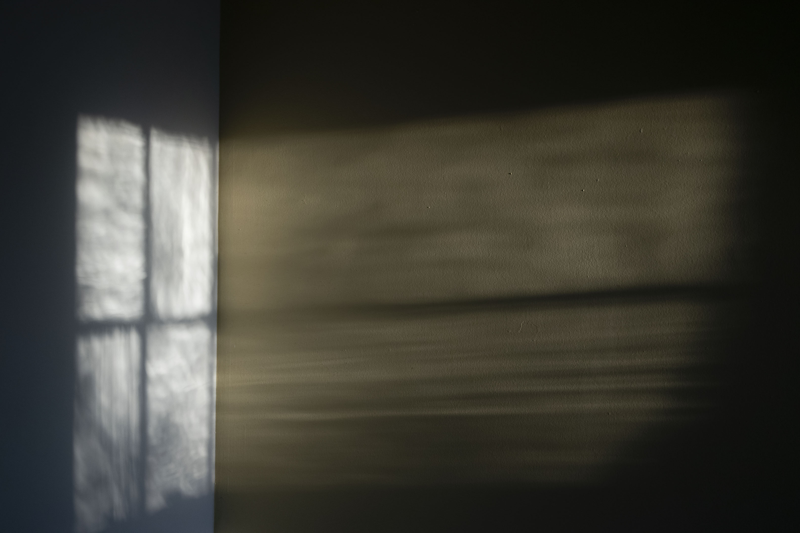

Auzzie's Photos
See what is possible with a camera.
I have been a photographer for a short amount of time and I still think of myself as an amature. I hope to be able to pass down advice from what I have learned and what I am currently learning.

Gallery


Tips and Advice
- Framing is important! It can make or break your photo sometimes.
- Make sure the tripod is always set correctly! I broke my kit lens that way. Oops.
- I encourage experimentation with different styles of photography. You never know what you may or may not like!
- integrate the camera into your life. it may be more interesting than you think. <
- For digital I highly recommend buying a pancake lens or taping a zoom kit lens at ... for practice. It helps with not relying on the zoom on a camera and makes the photographer see the world differently. I also beleive it helped me with my 4x5 photography and helped me fall in love with film as well.
Learning how to photograph with film is an experience and is not for everyone, but it is an expeierence I recommend for all photographers. It is very different from digital photography because with film as a photographer you have to be more selective in what you want to photograph because you only have a limited amount of photos you can shoot. Impulsive photography is what i love to do. I get random ideas and attempt to preform them in front of a camera